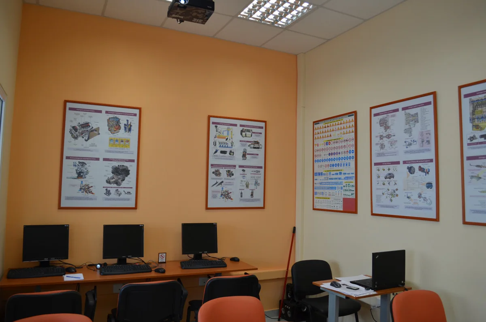
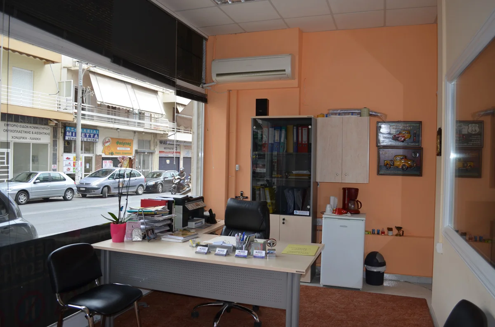
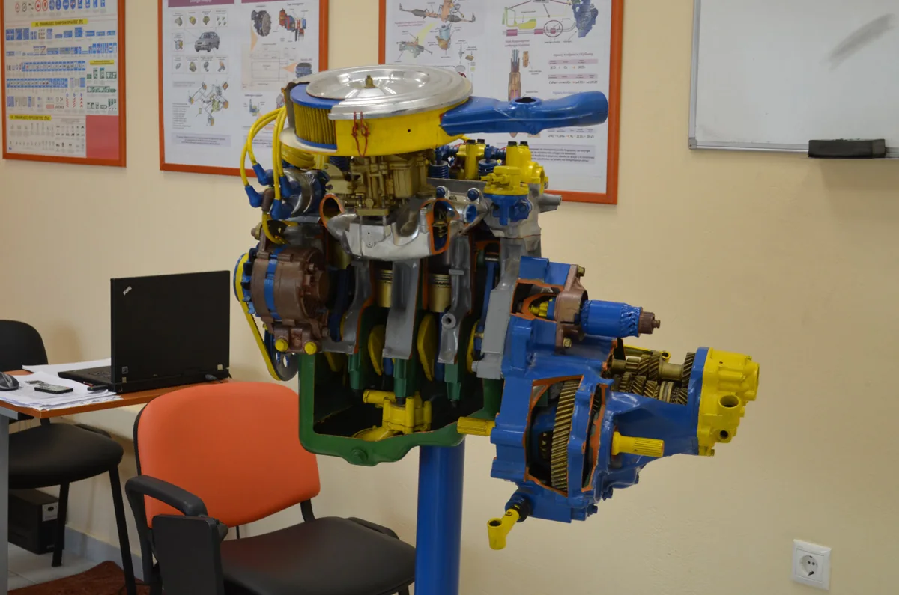
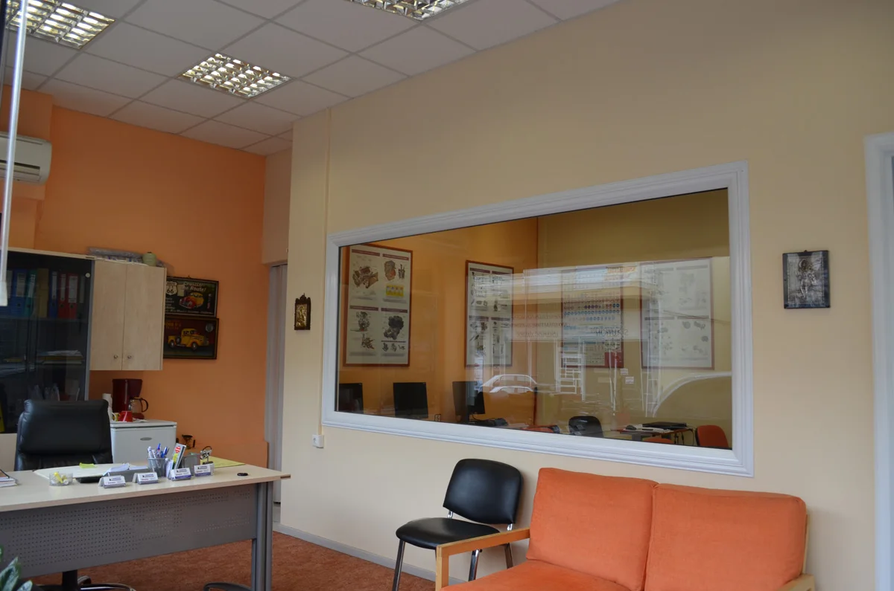
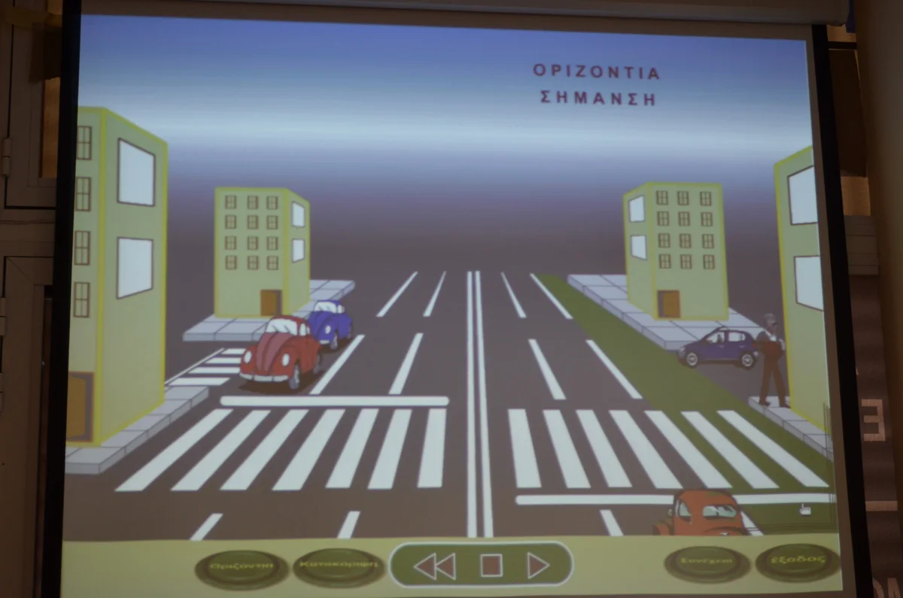

Η ΣΧΟΛΗ
Η καλή οδήγηση
ξεκινά από τη γνώση.
Γνώρισε τη Σχολή Οδηγών Καραμπίνης στην Παλλήνη. Έναν χώρο για να κάνεις ερωτήσεις, να κατανοήσεις τη θεωρία και να οργανώσεις το επόμενο βήμα σου.

Η ΦΙΛΟΣΟΦΙΑ ΜΑΣ
Η εκπαίδευση
έχει ουσία.
Στόχος της σχολής είναι η διαμόρφωση ενός σωστά εκπαιδευμένου οδηγού.
Η κατανόηση των κανόνων και η εφαρμογή τους στον δρόμο είναι δύο μέρη της ίδιας διαδρομής. Η θεωρητική εκπαίδευση έχει τον δικό της χώρο, με υπολογιστές, προβολέα και εκπαιδευτικό υλικό.
Πέρασε από τη σχολή για να συζητήσεις την κατηγορία που σε ενδιαφέρει, τη διαδικασία και το πρόγραμμα εκπαίδευσης.
Δες τις κατηγορίες διπλωμάτωνΜΙΑ ΜΑΤΙΑ ΑΠΟ ΚΟΝΤΑ
Ο χώρος της σχολής.
Φωτογραφίες από την υποδοχή, την αίθουσα και το εκπαιδευτικό υλικό της σχολής.






ΠΑΛΛΗΝΗ
Η αρχή γίνεται
με μια συνάντηση.
Εθνικής Αντιστάσεως 8 & Φειδιππίδου.
Επικοινώνησε για το ωράριο επίσκεψης και έλα να γνωρίσεις τον χώρο. Θα συζητήσεις τις επιλογές σου πριν αποφασίσεις.
Στοιχεία επικοινωνίαςΤΟ ΕΠΟΜΕΝΟ ΒΗΜΑ
Ας βρούμε τη δική σου διαδρομή.
Μίλησέ μας ή διάλεξε το θέμα της συνάντησής μας.